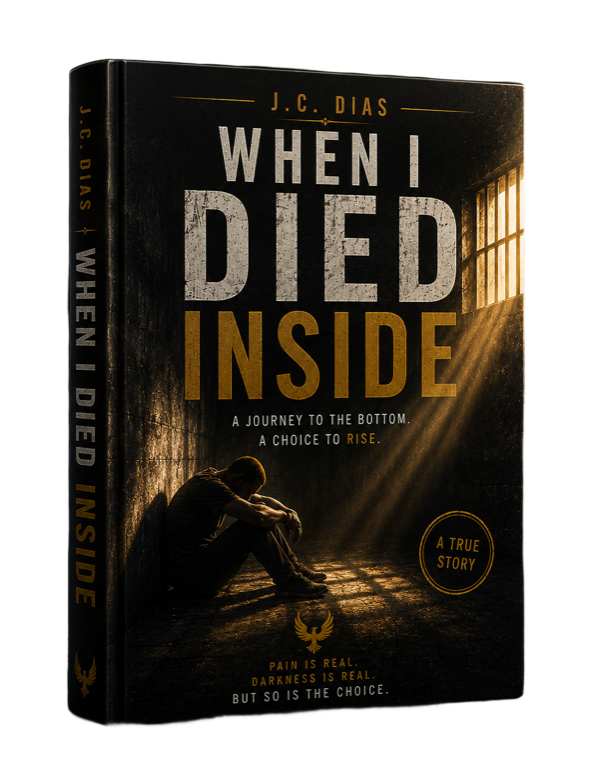

A journey through loss. A journey through faith. A journey toward the hidden chalice waiting inside every human soul.
It is a pilgrimage. A conversation between pain and purpose. Between who you were and who you are becoming. Between death and rebirth.
Everything falls apart.
You lose everything.
You walk without answers.
You meet the ones who awaken you.
What breaks you, shapes you.
You discover what was always there.
You are reborn from within.
The greatest discoveries are rarely found in distant places. They are found within.
Who am I?
Why am I here?
What am I afraid of?
What am I really
searching for?

“The greatest prison is not made of iron.
It is the one we carry inside.”
Throughout history, people searched for treasure in distant lands. But the greatest treasure was never hidden in a place. It was hidden inside themselves.
The world changes your story.
Purpose changes your soul.
If Send Him Back showed how a man survives the world... When I Died Inside reveals how a soul survives itself.
Complete the journey